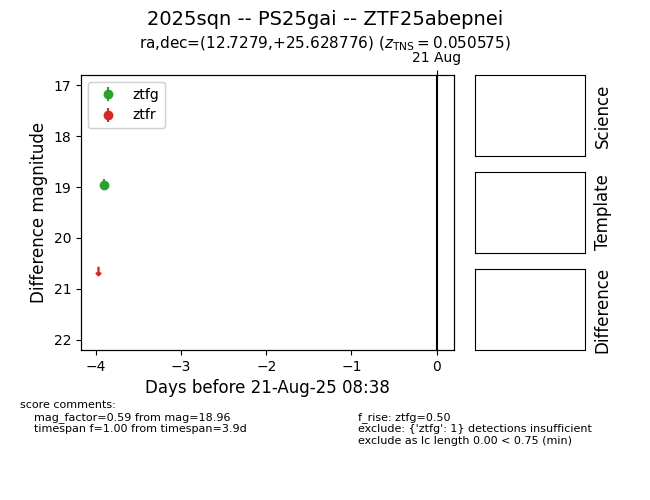

Target 2025sqn at 2025-08-21 10:27, see:
FINK: fink-portal.org/ZTF25abepnei
Lasair: lasair-ztf.lsst.ac.uk/objects/ZTF25abepnei
ALeRCE: alerce.online/object/ZTF25abepnei
TNS: wis-tns.org/object/2025sqn
YSE: ziggy.ucolick.org/yse/transient_detail/2025sqn
alt names
ZTF25abepnei (ztf,alerce)
2025sqn (tns,yse)
PS25gai (panstarrs)
coordinates:
equatorial (ra, dec) = (12.7279,+25.62878)
galactic (l, b) = (122.7829,-37.24282)
photometry
last ps1::i=18.45, ztfg=18.96
4 ps1::i, 1 ztfg detections
